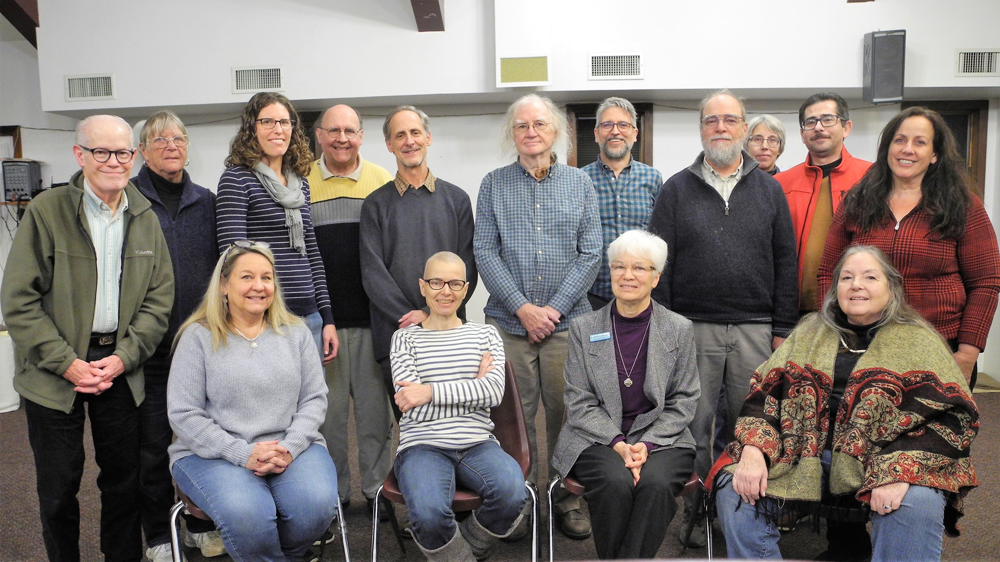
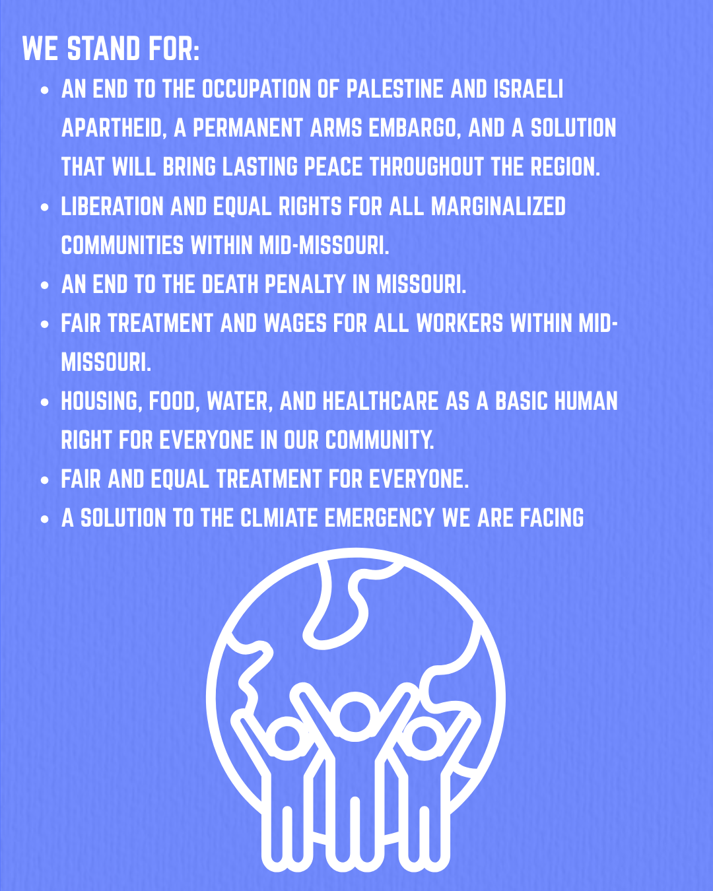

The Fellowship of Reconciliation (FOR) was founded in 1914 as an international organization promoting non-violence and peace. The Mid-Missouri chapter was established in 1961 to help strengthen our local community's commitment to justice and reconciliation through active outreach and education.
We routinely advocate for peace, non-violence, social justice, and human rights. Our efforts focus on resolving conflicts peacefully, addressing systemic inequities, and promoting mutual understanding across cultural and ideological lines.
